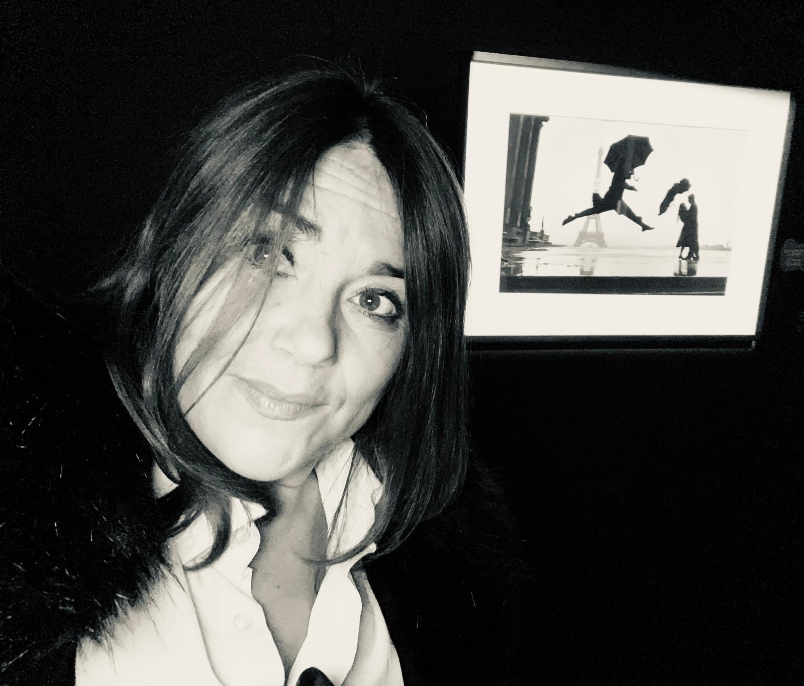

CécileÀ propos
Cécile
« Je ne cherche pas la perfection technique. Je cherche une sensation. Une vérité. Une émotion qui reste après le regard. »
La soif de découverte m'anime. J'ai souvent les sens en éveil et les yeux grand ouverts, afin de percevoir la sensibilité, la profondeur des êtres et des choses, leur vérité, leur vulnérabilité parfois, derrière les apparences.
J'aime les nuances et le contraste, la douceur et l'intensité, les silences qui en disent long, les regards qui racontent. La photographie est pour moi une mémoire du vivant — une manière de retenir l'instant de ce, de ceux qui nous échappent : un sourire lumineux, un soleil sur l'eau, une fleur qui frémit, une présence, une vibration.
Mon univers est un voyage sensible, poétique, parfois mélancolique, toujours profondément humain. Je suis attirée par les atmosphères sincères, les lieux habités, porteurs de sens et d'histoire, les visages qui vous transpercent le cœur.
J'aime révéler la beauté de ce qui ne cherche pas à se montrer : les instants suspendus, les fragilités, les mouvements du vivant. Ce qui m'inspire, c'est la légèreté, l'aérien, les espaces où l'on voit loin, la lumière et son chatoiement de nuances.
À travers mes photographies, j'ai envie de transmettre quelque chose d'intime et d'universel à la fois : la beauté discrète des êtres, la profondeur des instants simples, et cette lumière intérieure que chacun porte sans toujours le savoir.
Proposition de bio courte — à relire, corriger et compléter par Cécile. Les passages entre crochets [ ] sont à remplir ou à supprimer.
Bio
Cécile est une photographe [française, basée à ___]. [Autodidacte passionnée / formée à ___], elle a fait de la photographie une manière d'habiter le monde : être attentive à la lumière, aux détails que l'on ne regarde plus, et à la vérité des êtres.
Son regard explore aussi bien le patrimoine et l'architecture Art nouveau que la poésie de la rue et l'art urbain. [Depuis ___, elle expose son travail / a publié dans ___ / a collaboré avec ___.]
Elle est disponible pour [des portraits, des reportages, des séances en extérieur, des tirages d'art — à préciser]. Toute rencontre commence par un échange : n'hésitez pas à la contacter.